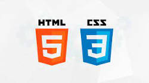
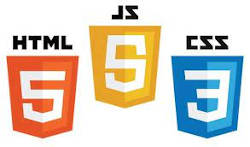
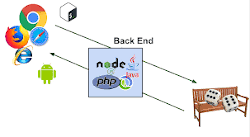

Sites e hospedagem
Hospedagem:
Um site tem dados, arquivos etc, ou seja é pesado e é necessário um lugar para se guardar todas essa informações. Ai que entra o serviço de hospedagem de site, onde o dono do site paga para guardar essas informações de forma segura.
Dominio
Dominio é um nome unico, não pode existir dois iguais, é como por exemplo o nome de uma empresa que por meio desse nome é identificada em seu site.
URL
URL não é nada mais nada menos que um endereço, por meio dele chegasse á um site. Um endereço de link vem com todas essas partes e mais um pouco. Um exemplo de link e suas partes completas:www.github.com/gustavoguanabara vamos ver o que significa cada parte.
- "www" essa parte é chamda de sub-dominio.
- "github" esse é o dominio.
- ".com" é o que chamamos de TLD.
- "/gustavoguanabara" essa é a URL.
Linguagens de marcação
As linguagens de marcação são duas, HTML e CSS essas linguagens são usadas para o desenvolvimento de sites junto com JS (JavaScript). Toda aquela estrutura que você vê em sites como por exemplo o Youtube é formada por essas linguagens.
CSS:
CSS significa "cascading Style Sheets", essa linguagem é a que cuida do design ou seja dá as cores, organiza o layout e deixa tudo mais bonito em seu site.
HTML:
HTML significa "HyperText Markup Language", essa linguagem é a que cuida das informações do site, tudo quanto é informação que está em um site é o HTML que faz.
Tipos de programadores
Front-end:
Os desenvolvedores chamados de "desenvolvedor front-end" são aqueles que usam as ferramentas "HTML, CSS e jv", o resultado do trabalho deles é voltado para o lado do cliente ou seja toda a estrutura visivel em um site.
Back-end:
Os desenvolvedores chamados de "desenvolvedor back-end" são aqueles que usam as linguagens de programação como Phyton, PHP, C#, Java entre outros. O trabalho deles é por trás do servidor é o que controla as coisas automaticamente.
Full Stack:
São os desenvolvedores que se especializam nos dois tipos (Front-end e Back-end) assim se tornam "completos" por assim dizer.